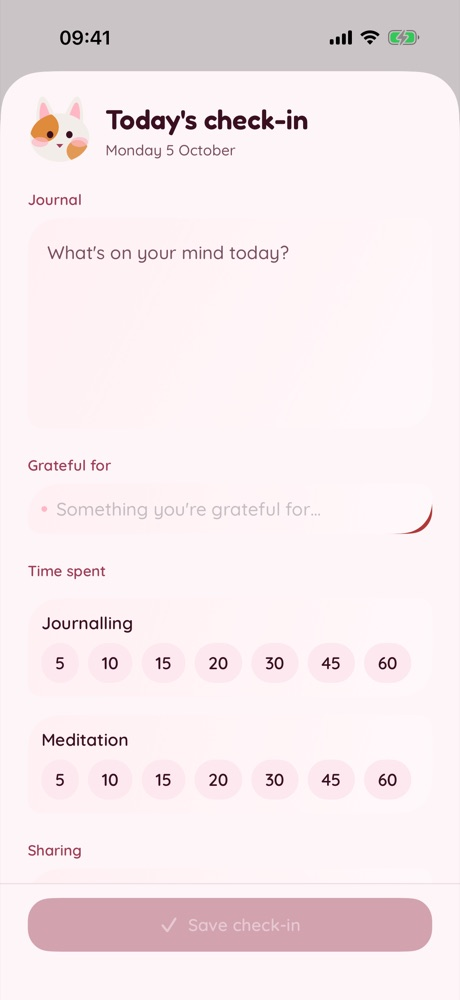
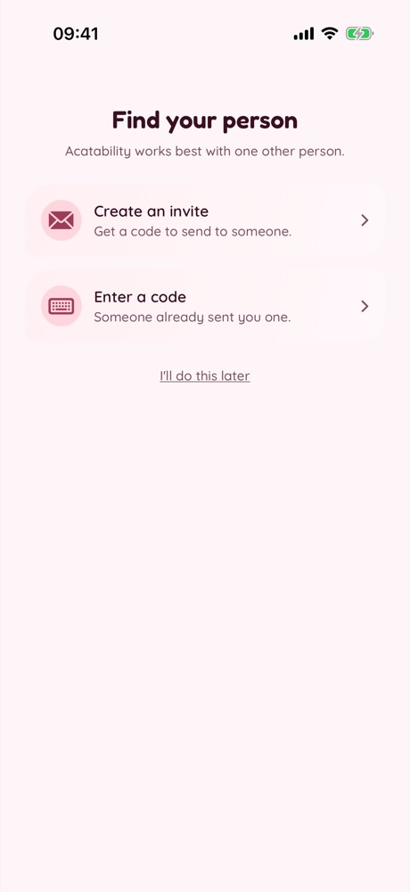
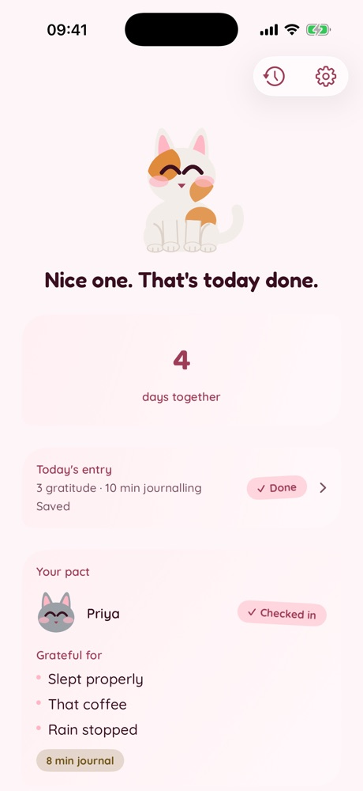

tap him
Your daily ritual.
Your friends.
One proud cat.
A few calm minutes, morning or night. Friends keep you going.
iPhone · launching Sunday 1 November Join the waitlist3 steps. That's it.



Join the waitlist
Get early access from 16 October.
Join the waitlistForm not showing? Open it here.
Free to start. No card needed.
We'll only email you about the launch (3 emails at most). Ask us to remove you any time at info@qurek.biz.